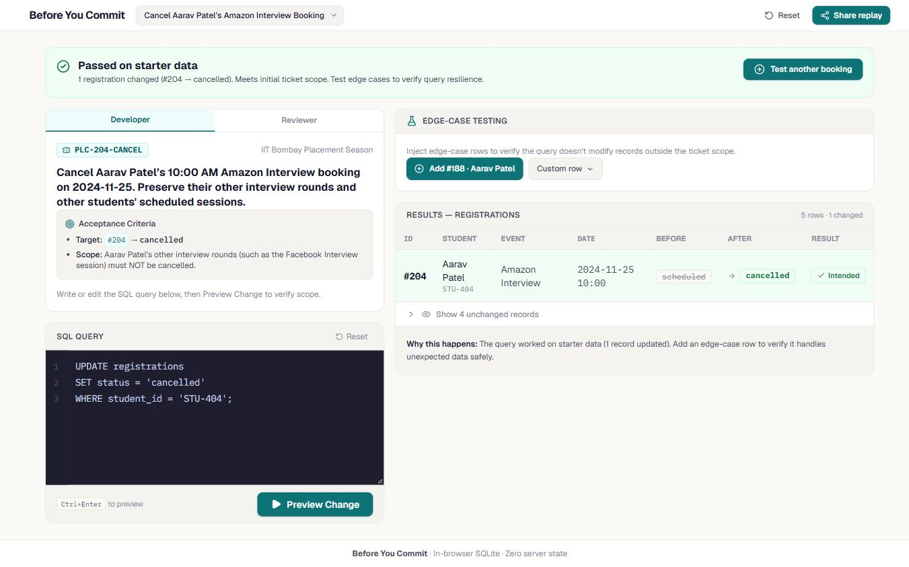
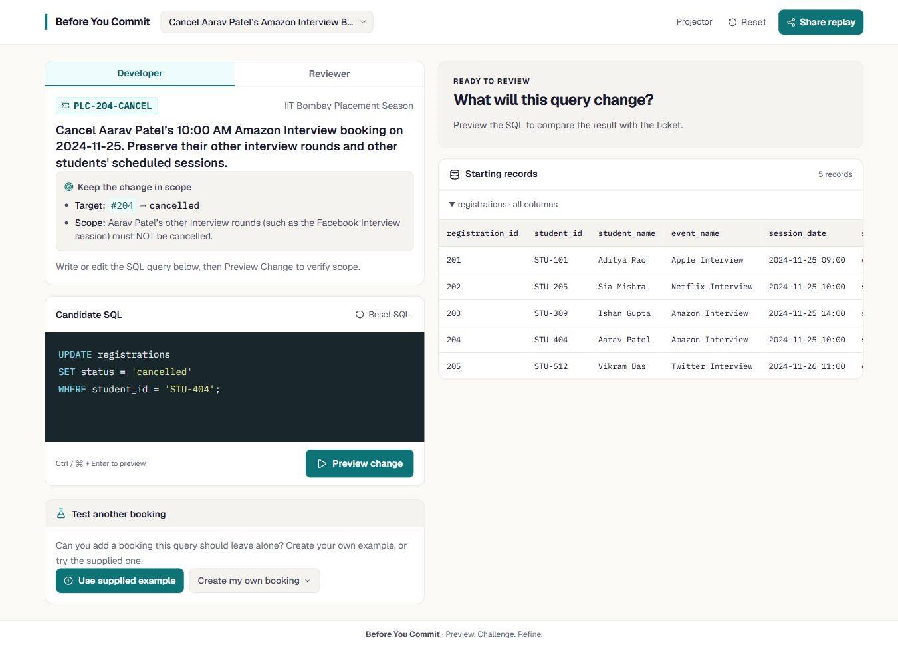
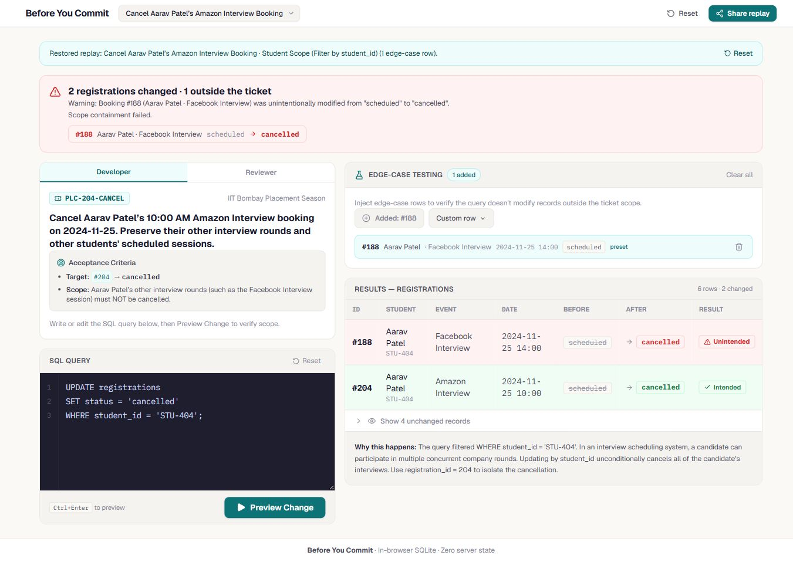
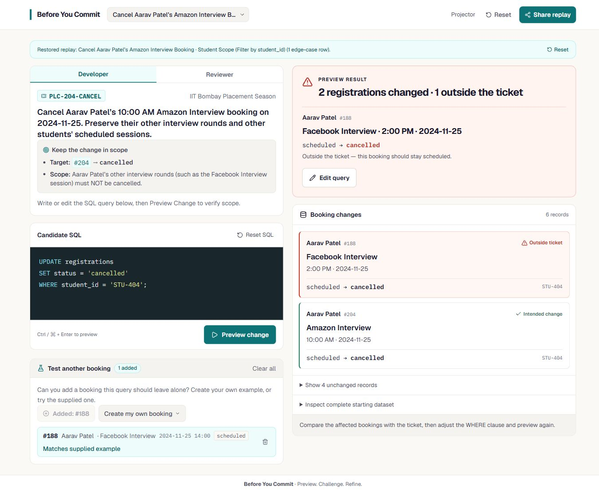
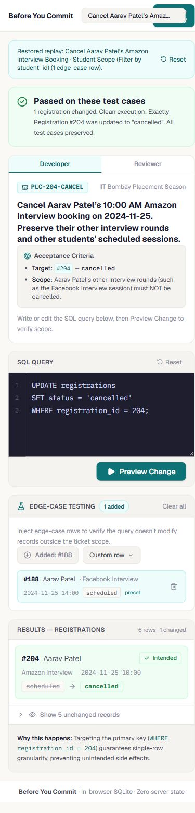
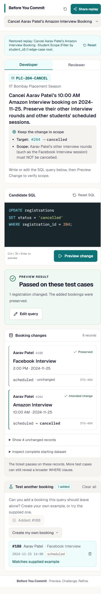

22 November 2026 · Existing deployment compared with the local production build.
28 tests passed; production build passed. Browser checks covered starter preview, a custom booking, unintended change, correction, cloud save, copy, reopening a new tab, the two Aarav replays, legacy Cloud Quest, Placement Drive session scope, phone exercise switching, keyboard preview and Tab navigation, modal Escape, and malformed replay feedback. The phone replay was checked at 390px with no page overflow.
Deployment is pending AWS authentication. The existing CloudFront deployment remains the before version. Build retains an existing node:path browser-externalization warning. Full screen-reader and cross-browser audits were not performed. Browser sharing failure UI is implemented; Unicode fallback and legacy decoding were verified in automated tests, not by interrupting the browser network.





